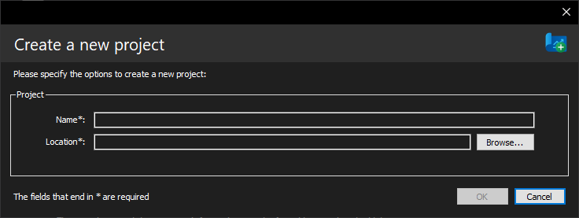
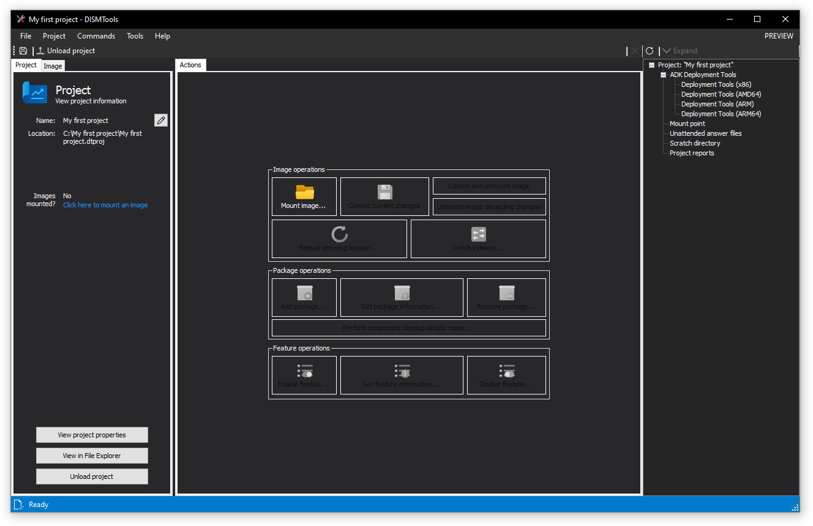
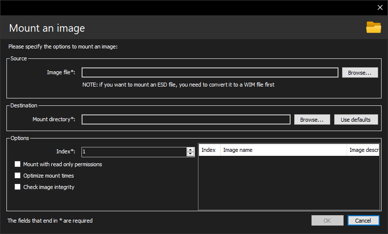

Getting started
If you don't know anything about Windows servicing, or come from other servicing tools, click on a section below to know what's different in this utility:
- Getting started with Windows servicing
- I come from other tools
If you want to know about something else, keep on reading.
Downloading and installing DISMTools
System requirements
Before installing DISMTools, you need to know what hardware and software configuration you have, which you can determine in a couple of ways:
- Open the "System" control panel, by pressing Win + R, and typing
control system(Windows Vista - Windows 8.1), or by typingms-settings:about(Windows 10 and later). You should see windows like these:

System control panel in Windows 7

About window in the Settings app
- Use the System Information (
msinfo32) program and refer to the "Processor" and "Installed physical memory" sections. You should see a window similar to this:

-
Use the
systeminfocommand, which you can launch from the Command Prompt, and refer to the "Processor(s)" and "Physical memory" sections -
Open the "Performance" section in Task Manager (Windows 8 or newer)
Once you've obtained the necessary information, compare it with the table below:
| Field | Minimum | Recommended |
|---|---|---|
| Processor | Any modern CPU with 2 cores | Any modern CPU with 4 or more cores |
| System architecture¹ | 32-bit architecture | 64-bit architecture |
| Memory | 1 GB | ≥ 2 GB |
| Operating system² ³ | Windows 8.1 (Client, any edition) Windows Server 2012 (Server, any edition) |
Windows 10 or later (Client, any edition) Windows Server 2016 or later (Server, any edition) |
Additional required software:
- .NET Framework 4.8 (Developer Pack, if you want to contribute to the project)
- PowerShell 5.0 or newer (you can detect the PowerShell version by opening PowerShell and typing
$PSVersionTable.PSVersion)
Optional software requirements:
- Windows ADK (Assessment and Deployment Kit)
Proceeding with the download
If you meet at least the minimum requirements, you are good to go. Go to one of the 2 links in the Downloads section.
With DISMTools 0.3 we ship 2 versions: a portable version (DISMTools.zip), and an installer (dt_setup.exe). If you plan on carrying an installation of DISMTools with you and using it on any supported device, download the portable version. Otherwise, download the installer.
If you downloaded the installer, follow each screen and click Next. In this case, we guarantee security and trust by not adding any screens with malicious offers⁴. If you downloaded the portable installation, extract the files using 7-Zip.
After installation
After installation has completed, you can run the program. The following steps are recommended to be done in order to get started
Creating your first project
With the program up and running, you'll begin by creating a project. Use the first link in the main screen, or go to File -> New project...
You'll see the following screen, in which you need to provide a name and a location.

After providing data on both fields, click OK. The project will be created and you'll be at the project screen.

To load this project later, go to "Open an existing project..." and specify the project location.
NOTE: in the future, a Recents list will be implemented
Loading a Windows image
The first thing you need to do after creating a project is to load an image to it. There are 2 ways to do this:
Mounting a Windows image
To mount a Windows image, either click the "Mount image..." button, or click the link in the left panel. You'll see this screen:

Specify the source image file you want to mount and the path you want to mount the image to. You can also configure more settings from this dialog, if you wish. Follow the image mount guide for more information.
INFO: the easiest way of getting a Windows image is by extracting the sources\install.wim file from Windows installation media. This can be easily done by mounting the ISO in the File Explorer or by using 3rd party tools, like 7-Zip.
Once you're done, click OK and wait for the image to be mounted. Finally, you have finished!
Loading an already existing mount directory
Since DISMTools 0.2, the program lets you load a mount directory and use it in your project if you've already mounted a Windows image to it.
To do this, switch to the "Image" tab on the left and click the link on the bottom. Next, specify the mount directory and click OK. That's it!
Best practices
When creating a project and/or managing Windows images, consider these best practices:
Project paths
-
Store your project on a location whose length is not greater than the
MAX_PATHpath length limitation (260 characters)- A great place to store your project on would be at the root of your preferred drive, or in a folder 1 level deep. Such examples would be:
D:\orE:\Projects\ - You can disable this limitation if you're using Windows 10, version 1607 or later, by following these guides
- A great place to store your project on would be at the root of your preferred drive, or in a folder 1 level deep. Such examples would be:
DISM operations
- An antivirus program may prevent you from doing an image task, so it's recommended to set an exclusion to the mount path of the image
- It's not recommended to mount more than 20 images at the same time, as it can cause significant performance degradation
- You must run this program and, at any time, DISM as an administrator, no matter what privileges you may have
- If you have mounted the image with write privileges enabled, it's best to commit your changes often. That way, if the image becomes corrupt, it's easier to recover it
- It's not recommended to store files on network shares, as it can be faster to perform most operations if the files are copied to a local disk
Servicing from Windows PE
Notes
¹ This program is not fully optimized for ARM processors
² The last version to support Windows 7 and Server 2008 R2 is DISMTools 0.2, released on 31 January 2023. Read the support notice in the aforementioned Downloads section for more information
³ If you were wondering, this program is not compatible with ReactOS or Wine
⁴ We guarantee security and trust with the installer, as long as it's downloaded from the official repository. If you downloaded the program from an external site, you need to be careful, as the distributor could have added malicious offers. In that case, it's best to read the screens.